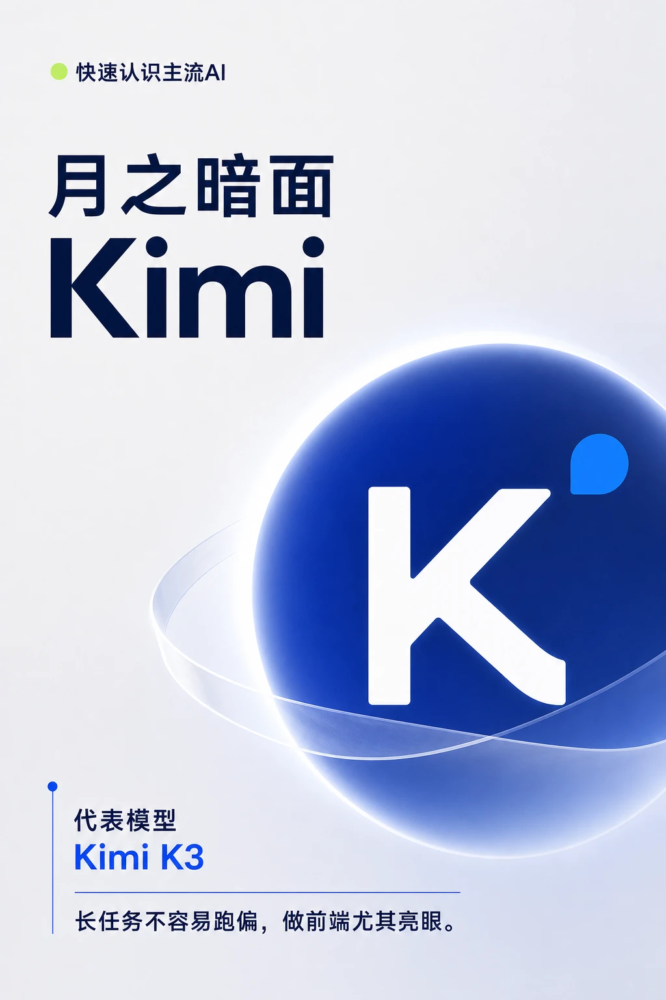
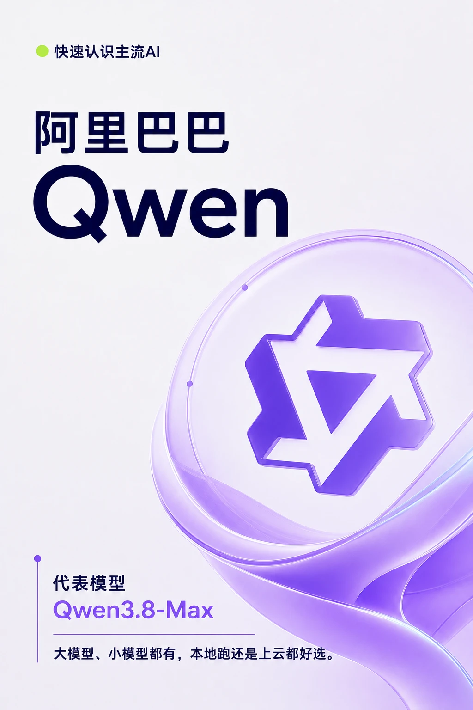
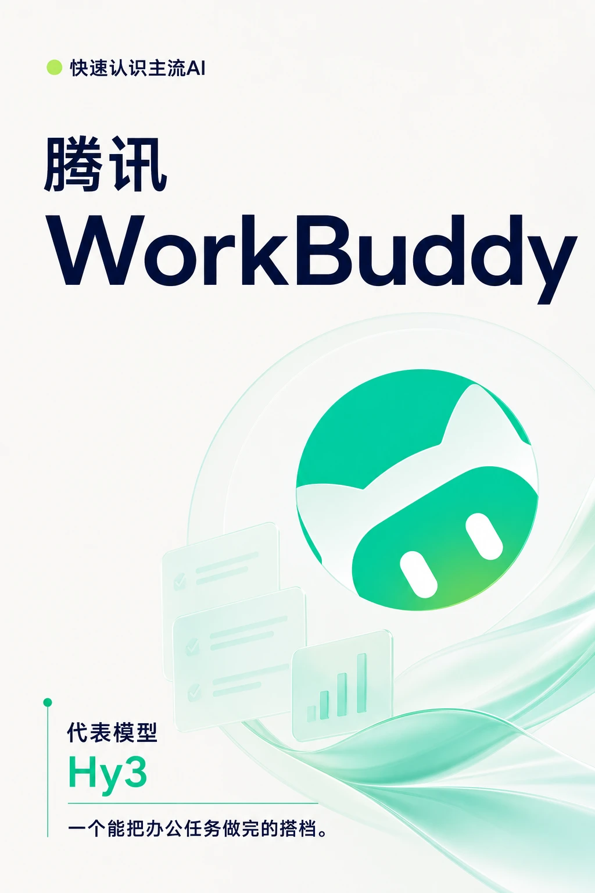
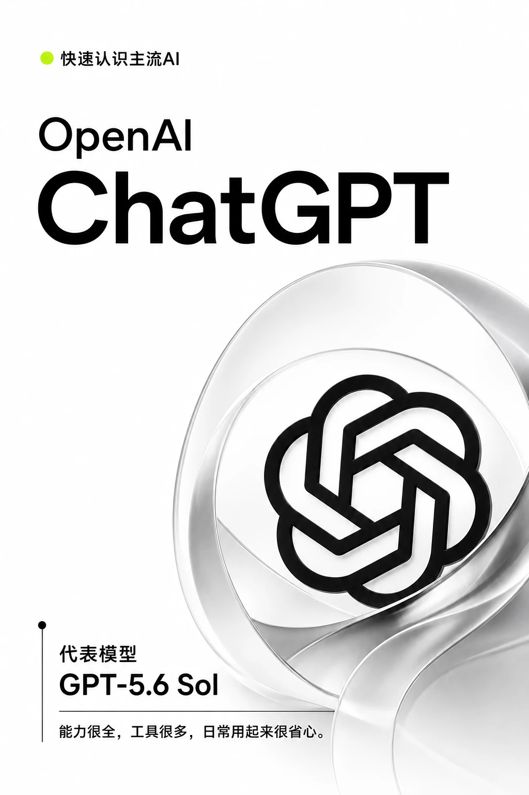
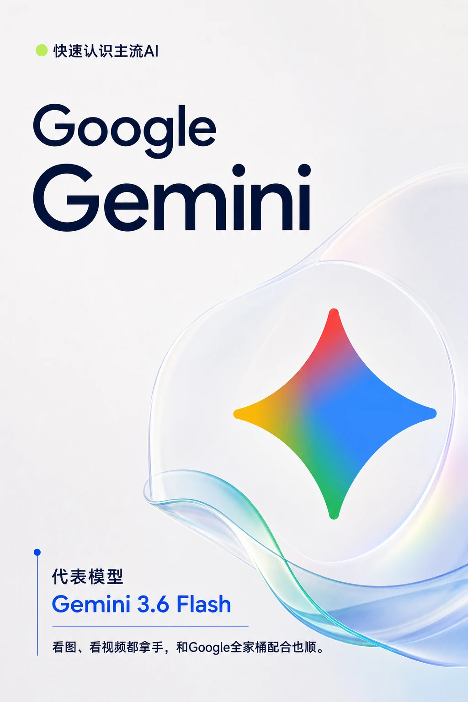
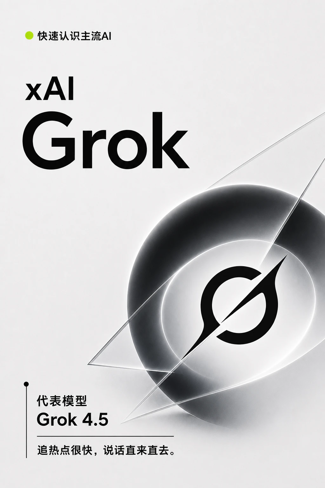
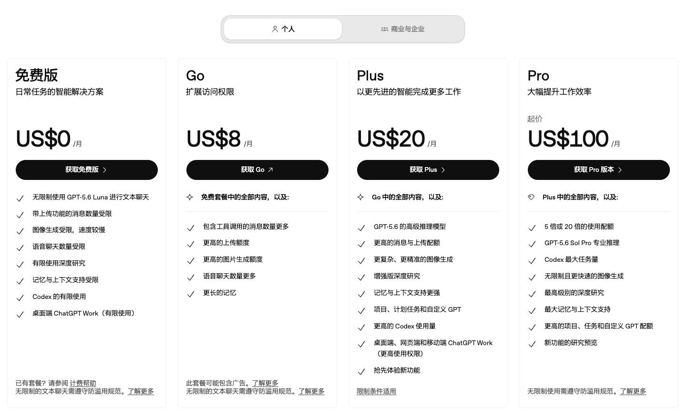
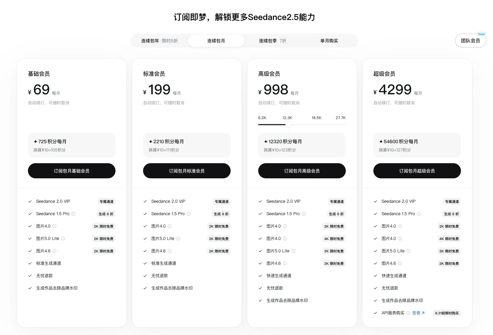
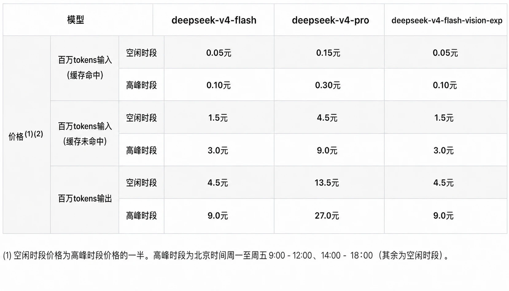
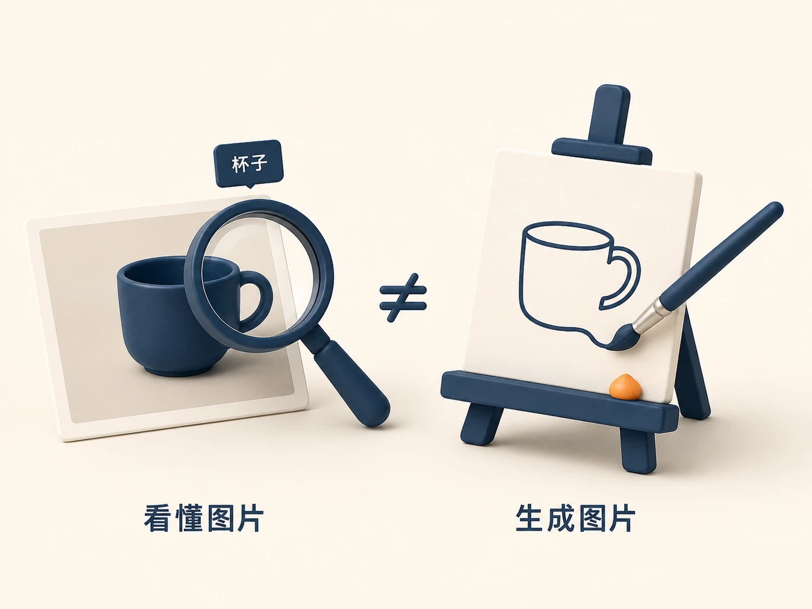

第一部分｜认识产品
01｜认识任务类型
任务范围
常见 AI 任务包括处理文字、生成图像、生成视频和自动执行任务。
先并列介绍处理文字、生成图像、生成视频和自动执行任务，说明每类任务大致包含什么，再用代表产品帮助理解。
任务示例
每种类型用一个熟悉的任务建立直观认识。
处理文字：回答问题、分析资料、整理或创作文字。代表产品有 DeepSeek、ChatGPT。
生成图像：制作照片、插画、海报或产品图。代表产品有 Seedream、Nano Banana、Midjourney、GPT Image。
生成视频：生成动态画面、镜头或完整短片。代表产品有 Seedance、Kimi H3、可灵、Runway。
自动执行任务：连续读取资料、调用工具、修改文件并检查结果。代表产品有 WorkBuddy、OpenClaw、Hermes Agent。
产品关系
产品和任务类型不是一一对应。
同一款产品可能完成多类任务，也可能集中解决其中一类。选择时看它能否完成手头任务，不按产品名称给它固定分类。
02｜认识主流产品
产品概览
这十款主流 AI 产品经常被提起，但相关信息比较零散。这里把它们放在一起，看看各自能做什么、有什么特点。
产品卡素材
- DeepSeek｜深度求索：突出推理能力和使用成本优势。
- GLM｜智谱 AI：突出持续处理复杂任务和编程能力。
- Kimi｜月之暗面：突出长任务处理和前端开发能力。

- Qwen｜阿里巴巴：模型选择丰富，既可本地运行，也可使用云服务。

- 豆包｜字节跳动：可以处理文字、图片和声音，日常使用容易上手。
- WorkBuddy｜腾讯：突出连续完成办公任务的能力。

- Claude｜Anthropic：处理复杂任务较有条理，适合写作和编程。
- ChatGPT｜OpenAI：能力覆盖广，可以连接较多工具，适合多种日常任务。

- Gemini｜Google：擅长理解图片和视频，也能配合 Google 的其他产品。

- Grok｜xAI：关注热点信息，表达风格比较直接。

03｜了解收费方式
先用免费版
大多数产品可以先免费使用；当额度不够，或需要更多能力时，再考虑付费。
免费版本通常会限制使用次数、生成速度或部分高级能力。付费不只是“能不能用”，更多是在购买额度、效率和更完整的功能。
了解订阅收费
按月订阅，是用固定月费换取更多额度和高级能力；不同产品给到的内容并不一样。
ChatGPT 用免费版、Go、Plus 和 Pro 展示不同月费对应的能力与额度；即梦在月费之外，还会提供每月可消耗的积分，生成图片和视频时会扣除相应积分。
PPT 使用 ChatGPT 与即梦的价格页面。


了解按量收费
按量计费，是用了多少算多少，常见于 API。
DeepSeek API 按百万 Tokens 计费，输入和输出的单价不同；是否命中缓存、使用哪个模型以及使用时段，也可能影响最终价格。
PPT 使用 DeepSeek 价格表。

比较付费方案
月费和 API 单价不能直接比较：一个买一段时间内的使用权益，一个按实际用量结算。
先看免费版本是否够用，再根据使用频率判断更适合订阅还是按量付费。
第二部分｜理解变化
04｜认识产品变化
变化概览
前面比较了不同产品的能力，这里继续看同一款产品怎样持续更新，或者停止服务。
持续更新
DeepSeek 的变化不只发生在模型里，也发生在公众关注和产品接入中。
用五个关键节点，看 DeepSeek 怎样从发布模型走进公众视野。
- 2023年11月｜DeepSeek LLM｜首次亮相：DeepSeek 推出自有大模型，正式进入大模型赛场。
- 2024年12月｜DeepSeek-V3｜全面开源：模型和技术论文同时开放，“高能力、低成本”迅速吸引开发者关注。
- 2025年1—2月｜DeepSeek-R1｜引爆关注：春节前后引发热议，腾讯元宝、微信搜索等产品迅速接入，DeepSeek 进入公众视野。
- 2026年4月｜DeepSeek-V4｜百万上下文：一次可以处理百万级上下文，长资料和复杂任务成为新的核心卖点。
- 2026年8月｜DeepSeek-V4-Flash-Vision-Exp｜图像理解：DeepSeek 开始看懂图片，从文本模型走向多模态智能体。
参考：DeepSeek LLM、DeepSeek-V3、DeepSeek-R1、腾讯多款产品接入 R1、DeepSeek-V4、V4-Flash-Vision-Exp。
停止服务
产品不仅会持续更新，也可能停止服务。
Sora 2 在2025年9月发布；Sora 网页和 App 已于2026年4月26日停止服务，API 计划于2026年9月24日停止。曾经的重要产品也可能退出，保存作品和掌握通用方法都很重要。
参考：Sora 停止服务说明。
05｜看懂发展方向
未来方向
能力正在沿着三个方向发展：看懂更多信息，独立推进更多步骤，走向更广泛的通用智能。
用三个关键词，看产品正在扩展什么，以及更远的发展目标是什么。
- 多模态｜看懂更多：同时处理文字、图片、声音和视频。理解和生成是两种不同能力，能看图不等于能生图。

2. 智能体｜完成更多：调用工具、操作文件，围绕目标连续推进任务，并根据中间结果决定下一步。 3. 通用人工智能（AGI）｜能力更广：目标是在更多领域理解、学习并解决不同类型的问题。多模态和智能体已经进入产品，AGI代表更远的发展目标。
参考：GPT-4o 多模态能力、智能体实践指南、Levels of AGI。
第三部分｜学会选择
06｜匹配任务场景
判断重点
先说清楚要完成什么，再筛选能够完成这类任务的产品。
场景匹配
先从使用场景确认任务类型，再筛选候选产品。需要判断任务属于处理文字、生成图像、生成视频，还是自动执行多个步骤。这里不重新介绍四类任务，只把第一部分的内容转化为选择动作。
任务示例
把模糊需求改成可以匹配产品的具体任务。
“帮我做宣传”还无法直接选择工具；先明确最终需要一篇推文、一张海报、一条视频，还是从整理资料到交付成品的一整套工作，再筛选具备相应能力的产品。
完成这一步后，只保留能够完成这类任务的候选产品，不急着比较所有产品。
07｜确定使用位置
判断重点
工作发生在哪里，就优先选择能够进入这些资料和文件的工具。
使用位置
先区分通过浏览器使用，还是安装桌面应用。产品名称只作为使用位置的例子，重点看工具能否接触需要处理的资料和文件。
位置对照
用同一份文档，对比两种使用位置。
浏览器：打开网页即可使用，通过上传文件或粘贴内容完成任务，适合临时使用、单次问答和独立修改。
桌面应用：豆包、WorkBuddy、ChatGPT 等可以安装在电脑上，更方便结合本地文件和系统能力，适合频繁使用或连续推进任务。
08｜比较候选产品
试用方法
把同一个真实任务交给几个候选产品，比较效果、费用和速度。
比较条件
从三个方面记录试用结果，不做复杂评分：
效果：结果能不能直接用，需要修改多少。
费用：免费额度是否够用，长期使用要花多少钱。
速度：完成一次任务需要多久，等待是否可以接受。
09｜建立个人清单
选择结果
没有一张名单适合所有人；每个常用场景留下一个首选和一个备选就够了。
个人短名单
为每个常用场景记录首选产品、备选产品和选择原因。例如：日常整理文字、制作工作配图、生成短视频、完成多步骤任务，各自保留经过试用的产品。
更新方式
产品更新后，不需要重新研究整个市场。出现新需求或现有产品不再合适时，用同一个任务重新试用，再调整自己的短名单。
小结｜三步挑选 AI 工具
- 明确任务：根据使用场景，找到能够完成这类任务的产品。
- 选择方式：确定准备在哪里使用。
- 实际试用：用同一个任务比较效果、费用和速度，留下适合自己的产品。
记住挑工具的方法，比记住今天的产品排名更有用。